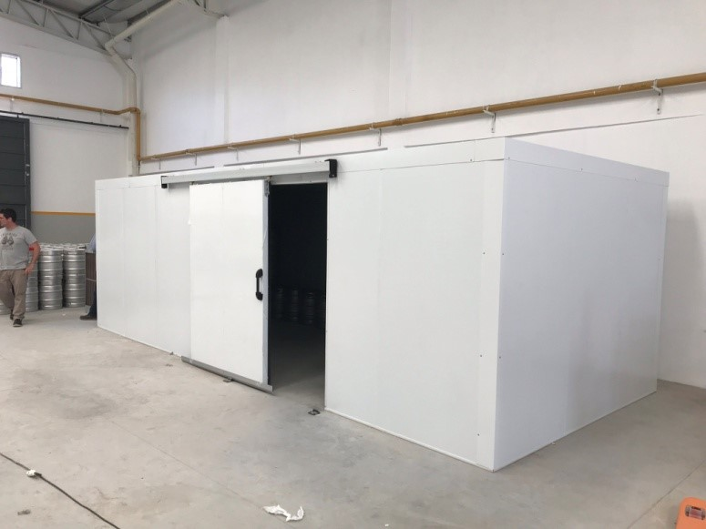
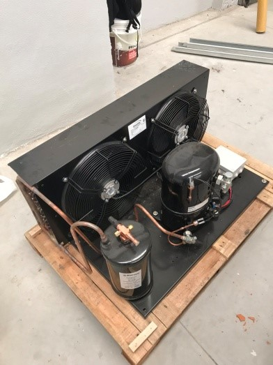
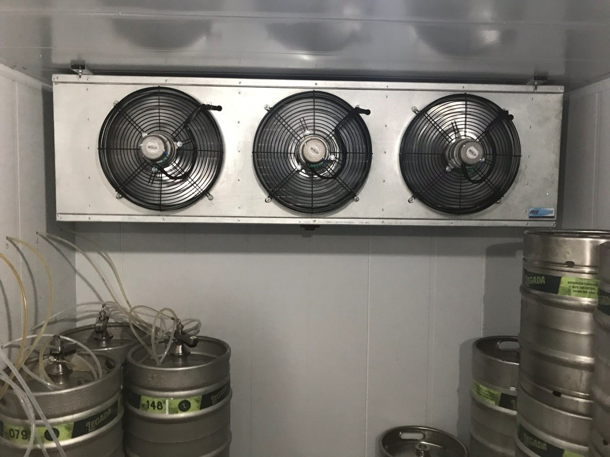

Nuestros gabinetes están construidos de poliuretano inyectado de 40kg m3, lo que garantiza una excelente rigidez y carga aislante, recubierto en ambos lados con chapa conformada prepintada . Unión de paneles en encastre macho - hembra con corte de frio a través de poliuretano desnudo. Para el armado, se utilizan zócalos sanitarios exigidos por SENASA formando el perímetro, Esquinero rígido en pvc, y Angulo interior y exterior en chapa. Puerta con marco reforzado y calefaccionado en los gabinetes de baja temperatura. Disponemos de toda la línea de unidades condensadoras para garantizar el mejor frío para la cámara, desde unidades condensadoras tipo convencional remoto, hasta unidades compactas de pared o tipo Split. Todos nuestros equipamientos son calculados en función del producto, la temperatura y la rotación diaria requerida por el cliente. Armado con tablero de mando y control electrónico de temperatura y descongelamiento